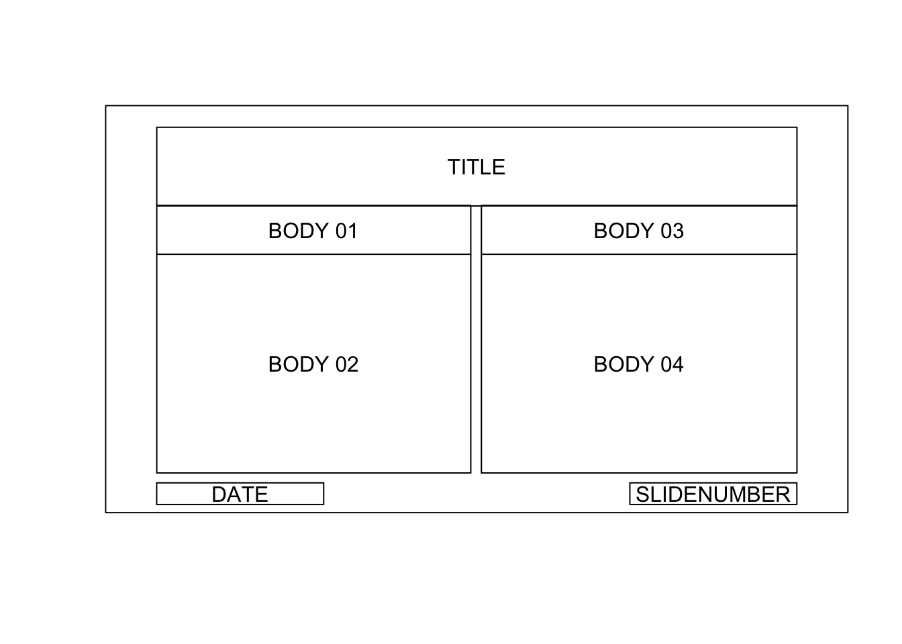

Use the function pptx to create an r object representing a PowerPoint document. It takes two arguments: a title (appearing only in the document properties) and a template file. If none is provided, the template file will be an empty document located in the package directory.
When creating a pptx object, you use a template file. This file is copied in memory and that copy becomes the document that will be completed with R outputs. Formats and available slide layouts will be those available in the template file.
You must add a slide before you are able to send R outputs into that document (into that slide…). Use the function addSlide to add a slide into the pptx object. The number of available shapes that can be filled by R outputs is conditionned by the chosen layout. For example, layout ‘Title and Content’ can receive only one R output, ‘Two Content’ can receive two R output.
Next, you create the components of your slide. You then add text, tables, plots and other components into the slide that has just been added, available functions are documented below.
When adding an R output, if no position nor size is specified, the R output will be placed with position and dimensions of the available shape defined in the template layout. If you need a new layout, there are two options, create it in PowerPoint or force size and position.
Finally, using writeDoc, you write the object into a file with the suffix .pptx on your file system.
Below you can follow this process with a commented R script:
library( ReporteRs )
# Creation of doc, a pptx object (default template)
mydoc <- pptx( )
# check my layout names:
slide.layouts(mydoc)## [1] "Blank" "Title Only"
## [3] "Title and Content" "Section Header"
## [5] "Title and Vertical Text" "Comparison"
## [7] "Content with Caption" "Title Slide"
## [9] "Two Content" "Vertical Title and Text"
# add into mydoc first 10 lines of iris
# add text into mydoc (and an empty line just before). Paragraph
# properties will be those of the shape of the used layout.
# add a plot into mydoc
filename <- "base_example.pptx" # the document to produce
# write mydoc
writeDoc( mydoc, filename )Download file base_example.pptx - view with office web viewer
pptx will let you create documents based on a ‘pptx’ template file.
If none is provided, an empty document will be used (located into the package directory).
# use D:/docs/template/my_corporate_template.pptx as template
# use default template
doc <- pptx()ReporteRs use PowerPoint file as templates. A template is the original PowerPoint document where all slides layouts, shapes (placeholders) and styles come from:
If you need other layouts than those that come with PowerPoint’s built-in Slide Master of your template, you can add a layout and customize it for your PowerPoint presentation. To add your own layout, just follow these steps in PowerPoint:
pptx object with function pptx using the argument template specifying the template filename.If no slide has been added into the document object no content (tables, plots, images, text) can be added.
Funtion addSlide let you add a slide in the pptx object. Argument slide.layout let you specify which layout to use to design the new slide.
doc <- pptx()
filename <- "addslide_example.pptx" # the document to produce
writeDoc( doc, filename )Download file addslide_example.pptx - view with office web viewer
slide.layouts
Available layouts are those contained in the template. Slide layout concept is important in ReporteRs.
Content is conditioned by the chosen layout. When a slide is added with layout ‘Title and Content’, this slide will only be able to contain 2 contents: a title and a content theses are shapes.
Shapes (or placeholders) are where most of the formatting is done: plot size is defined by shapes dimensions in the layout, default fonts and paragraphs styles are those defined by the shape properties, etc.
slide.layouts returns slide layouts names. When adding a slide with addSlide you may need that function to ckeck available names.
doc <- pptx()
slide.layouts(doc)## [1] "Blank" "Title Only"
## [3] "Title and Content" "Section Header"
## [5] "Title and Vertical Text" "Comparison"
## [7] "Content with Caption" "Title Slide"
## [9] "Two Content" "Vertical Title and Text"Check slide layout
use optional argument layout with function slide.layouts to get a plot of the design of your layout.
doc <- pptx()
slide.layouts(doc, 'Comparison')
## [1] "Blank" "Title Only"
## [3] "Title and Content" "Section Header"
## [5] "Title and Vertical Text" "Comparison"
## [7] "Content with Caption" "Title Slide"
## [9] "Two Content" "Vertical Title and Text"Here, the slide can receive the following shapes: a title, 4 contents (plots, tables, paragraphs), a date and a slide number.
Width, height and positions of the output (i.e. shape size and position) are defined by the properties of the shape defined in the layout of the PowerPoint template used.
When adding content, ReporteRs read the properties of the next available shape in the current slide.
You can explicitly specify shape position and dimensions for some specific outputs: tables, text, plots and external images..
If arguments offx, offy, width, height are missing, position and dimensions are defined by the width and height of the next available shape of the slide.
If these arguments are specified, they become position and dimensions of the new shape. It let you also to add content on a slide if no more shape is available.
library( ggplot2 )
color = Species, size = Petal.Width, alpha = I(0.7) )
offx = 1, offy = 1, width = 6, height = 5 )
offx = 8, offy = 2, width = 4.5, height = 3 )
filename <- "force_pos_size.pptx" # the document to produce
writeDoc( mydoc, file = filename )Download file force_pos_size.pptx - view with office web viewer
Function addDate lets you adding a date in the current slide. The shape will be positioned with the date shape properties of the template document.
doc <- pptx()
doc <- addDate( doc )
filename <- "date_example.pptx" # the document to produce
writeDoc( doc, file = filename )Download file date_example.pptx - view with office web viewer
Function addPageNumber lets you adding slide number in the current slide. The shape will be positioned with the page number shape properties of the template document.
doc <-pptx()
doc <-addPageNumber( doc )
doc <-addPageNumber( doc, 'Dummy text' )
filename <- "pagenumber_example.pptx" # the document to produce
writeDoc( doc, file = filename )Download file pagenumber_example.pptx - view with office web viewer
Function addSubtitle lets you adding a subtitle in the current slide. The shape will be positioned with the subtitle shape properties of the template document.
Subtitle shape only exist in slide of type ‘Title Slide’.
doc <- pptx()
filename <- "sub_example.pptx" # the document to produce
writeDoc( doc, file = filename )Download file sub_example.pptx - view with office web viewer
To replace an existing slide by a new one, use addSlide with optional argument bookmark. Bookmark is the index of the slide that has to be replaced with a new empty one.
myplot = qplot(Sepal.Length, Petal.Length, data = iris, color = Species, size = Petal.Width, alpha = I(0.7))
mydoc <-addTitle( mydoc, 'my new graph')
mydoc <-addPlot( mydoc, print, x = myplot )
filename <- "pp_replacement.pptx" # the document to produce
writeDoc( mydoc, file = filename )Download file sub_example.pptx - view with office web viewer
ReporteRs can be used with package magrittr, it makes code easier to read and more compact.
library( magrittr )
filename <- "pipe_example.pptx" # the document to produce
Download file pipe_example.pptx - view with office web viewer